WALALAND 상품등록 성능 개선기
기존 현황 및 문제점
| 옵션명 | 옵션가 | 재고수량 | 판매상태 | 자체관리코드 | |
|---|---|---|---|---|---|
| 선택1 | 선택2 | ||||
| 그래파이트 블루/25인치/8 | 브라운밤피/25인치/8 | 00,000원 | N개 | 판매중 | 00000000 |
| 그래파이트 블루/25인치/8 | 그래파이트 블루/25인치/10 | 00,000원 | N개 | 판매중 | 00000000 |
| · · · · · | |||||
- 1+1 이벤트 상품의 경우 옵션1(37개) × 옵션2(53개) = 1,961개의 옵션 데이터를 저장해야 했습니다.
- 저장해야할 옵션의 개수 자체는 생각보다 그렇게 많은 데이터가 아니었지만, 기능이 동작되는데 너무 오래걸렸기 때문에 개선이 필요하다고 판단되었습니다.
개선 과정
옵션 데이터의 특성을 살펴보니 색상·사이즈와 같은 중복값이 다량 존재할 수 있었습니다. 특히 1+1 이벤트 특성상 옵션의 곱셈으로 데이터가 생성되므로 중복은 더욱 많아지는 구조였습니다. 캐싱을 적용해 중복값에 대한 API 호출을 제거하면 성능 개선과 금전 비용을 함께 줄일 수 있을 것으로 예상되었습니다.
캐싱을 적용해도 상품등록이 완료되기까지 파파고 시스템에 강하게 의존한다는 구조적 문제는 남아 있었습니다. 파파고에 장애나 병목이 발생할 경우 그것이 그대로 서버에 전파될 수 있다는 위험이었습니다.
상품 데이터는 사용자에게 노출되기 전 준비가 완료되면 된다는 특성을 갖고 있습니다. 이에 착안해 번역 로직을 비동기로 분리하고, 번역이 완료된 상품만 노출되도록 하는 구조를 고려했습니다. 관리자 입장에서도 번역 완료를 기다리지 않고 즉시 응답을 받을 수 있어 업무 효율성도 함께 기대할 수 있는 방안이었습니다.
문제된 상품의 옵션은 1,961개 규모로, 캐싱 적용만으로 충분한 개선이 예상되었습니다. 또한 우선순위가 높은 다른 작업들을 병행하던 상황이기도 했습니다.
아직 실제 장애로 이어진 적 없는 의존성 문제에 먼저 큰 구조 변경을 투입하기보다, 확실한 현재 문제를 빠르게 해결한 뒤 단계적으로 접근하는 것이 더 합리적이라 판단했습니다.
추가 개선
캐싱으로 외부 API 호출 비용은 크게 줄어들었지만, DB 접근 패턴에서 추가 병목이 남아 있었습니다. 응답 시간을 더 단축하기 위해 DB 접근 횟수 자체를 줄이는 작업을 이어서 진행했습니다.
- 쿼리 수 : 5,230회 (동일)
- 방식 : 같은 양의 일을 빠르게
- 추가 비용 : 스레드 메모리·CPU, 커넥션 풀 부담
- 쿼리 수 : ~53회 (1/100 감소)
- 방식 : 일의 양 자체를 줄임
- 추가 비용 : 없음
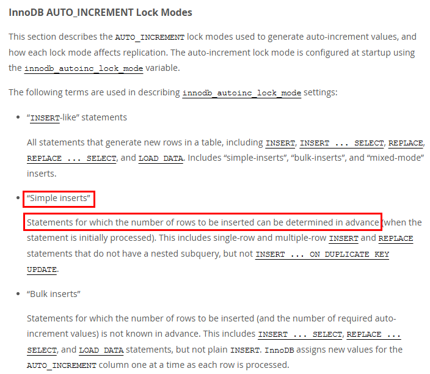
Lock Mode라는 옵션이 존재했는데, 옵션들을 설명하기 위해 Insert문의 종류를 키워드로 정의하여 설명에 사용하고 있었습니다.
"Insert-like"문은 테이블에 생성하는 모든 문을 의미하며, "simple-inserts", "bulk-inserts" 등이 모두 포함된다고 합니다.
"Bulk Inserts"라는 키워드도 존재했지만 현재 우리의 상황은 JDBC 레벨에서 Multi Value로 바꿔주어 삽입할 행 수를 미리 알 수 있으므로 "Simple inserts"에 해당했습니다.
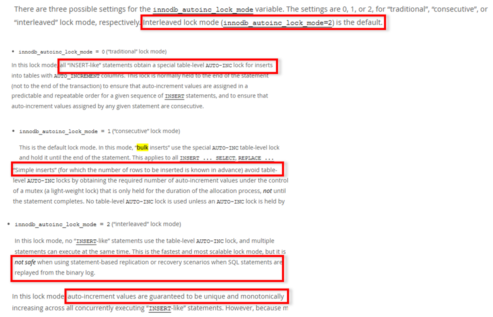
innodb_autoinc_lock_modeinnodb_autoinc_lock_mode는 총 0, 1, 2의 총 3개가 존재하며 2번 모드가 디폴트 설정입니다.
0의 경우 모든 삽입문에 대해 Table 수준 Lock을 걸어서 한 삽입문 수행이 끝날 때까지 다른 Insert 작업은 기다려야합니다.
1의 경우 우리의 상황인 "Simple inserts"이면 ID 할당 프로세스 동안만 잠금을 거는 경량 잠금인 mutex를 활용하여 Table 수준의 Lock을 거는 것은 피할 수 있다고 합니다.
2의 경우 모든 삽입문에 대해 Table 수준의 Lock을 사용하지 않습니다.
즉, 우려했던 테이블 단위 Lock으로 인한 병목 문제는 별도 추가 설정 없이도 괜찮은 것을 확인 가능했습니다.
rewriteBatchedStatements 옵션을 true로 설정하여 Multi Value Insert로 변환하였습니다.결과
회고
중복 호출을 줄이고 Bulk 처리를 도입해 유의미한 성능 개선을 달성했지만, 이 경험을 통해 얻은 배운 점과 몇가지 아쉬운 점이 있습니다.
배운 점
기술적으로 더 깊은 해법(비동기 아키텍처)이 존재하더라도, 현재 상황(데이터 규모, 다른 작업의 우선순위 등)에서 합리적인 선택을 빠르게 적용하고 단계적으로 발전시키는 것이 보다 합리적일 수도 있다는 것을 체감했습니다. 모든 문제를 한 번에 풀려고 하지 않고, 상황과 트레이드 오프를 고려해 선택하는 것의 중요성을 깨달을 수 있었습니다.
남겨진 과제
본문에서 "단계적 접근"으로 미뤄둔 비동기 아키텍처 전환은 여전히 남은 후속 과제입니다. 향후 번역 데이터량이 더 커지거나, 외부 시스템 장애로 인한 실제 영향이 발생하기 전 선제적으로 적용해야 할 다음 스텝입니다. 일반 상품 등록과 비동기 상품 등록을 구분하여 제공하거나, 추후 상품 대량 등록 기능 구현 시 도입을 함께 검토할 수 있을 것입니다.
1. 캐시 데이터 무효화 / 관리 정책
MySQL 영속 캐싱은 안정성이라는 큰 장점을 얻었지만, 동시에 오역된 번역이 영구적으로 박제될 위험과 파파고 모델의 개선분을 받지 못하는 문제가 존재합니다.
이를 보완하기 위해 TTL 기반 자동 무효화, 관리자가 수동으로 무효화·재번역할 수 있는 기능, 또는 관리자 검수 플로우 같은 후속 설계가 필요할 수 있습니다.
2. 도메인 모델 개편 — 옵션 데이터의 정규화
색상·사이즈와 같은 옵션 차원을 별도 테이블로 분리해 정규화하면, 같은 차원값(예: "Black", "L")이 상품 전체에서 단일 레코드로 관리됩니다. 이렇게 되면 캐싱조차 필요 없어지는 근본 해법이 될 수 있을 것입니다.
FitMate — 운동 소셜 플랫폼
2026.03 ~ 진행 중 · 기획 / 백엔드 / 모바일 앱 · 1인 개발
주요 화면
각 네비게이션 탭을 누르면 해당 예시 화면이 노출됩니다.


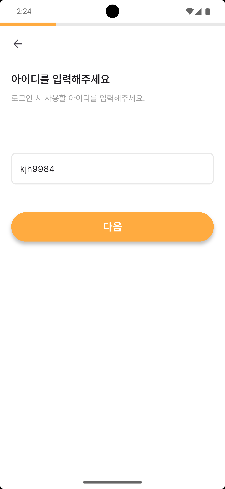
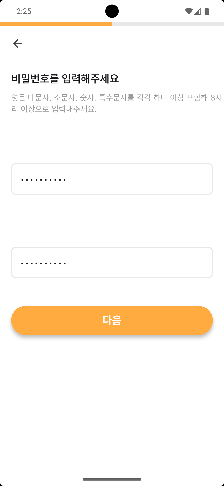
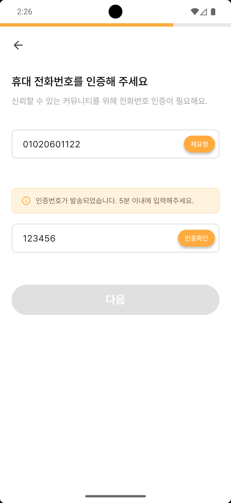
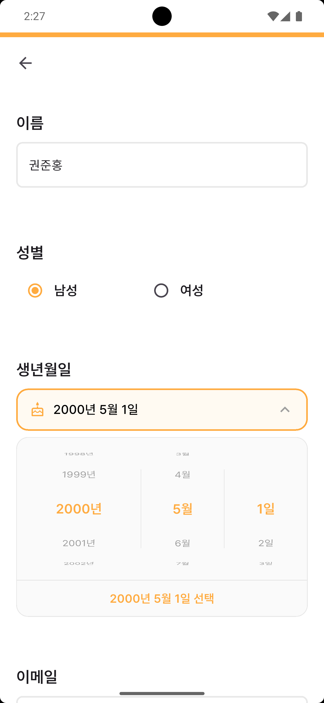


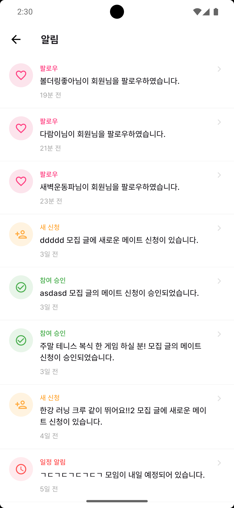
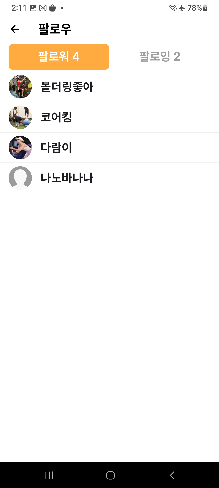
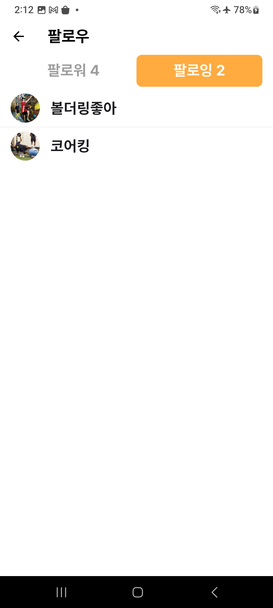
프로젝트 소개
- 운동 메이트가 필요한 운동 종목들에 대해 메이트를 찾을 수 있는 소셜 플랫폼 앱입니다.
- 현재 Google Play Store에 정식 출시되어 운영 중이며, 사용성을 높이는 등 꾸준히 개선해나가고 있습니다.
- 기능 고도화 및 배포 단계에서 AI 도구(Claude Code)를 활용해 생산성을 높였습니다.
기술 스택
주요 기능
시스템 아키텍처
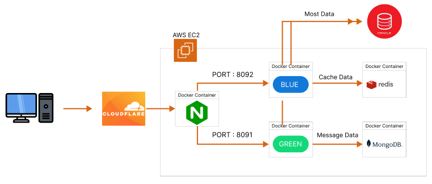
- 가용 서버 하나로 무중단 배포를 위해 Docker Container를 사용하였습니다.
- Cloudflare를 통해 DNS/SSL을 관리하고, Nginx 리버스 프록시를 통해 구동 중인 컨테이너로 요청이 전달됩니다.
- 캐싱 데이터 및 알림은 Redis에서 관리되며, 채팅 데이터는 MongoDB에서 관리됩니다.
- 나머지 데이터는 Oracle DB에서 관리됩니다.
- 현재는 비용 문제로 운용 서버는 AWS -> 개인 물리 서버로 이동된 상태입니다.
주요 설계 전략
- DB 교체로 겪었던 문제로 인해 비즈니스의 가치를 가지는 도메인이라는 개념을 온전하게 보존할 수 있는 아키텍처를 경험해보고 싶어졌습니다.
- 관련된 아키텍처 중 저명한 헥사고날 아키텍처와 클린아키텍처의 개념을 편의에 맞게 재구성하여 리펙토링을 진행하였습니다.
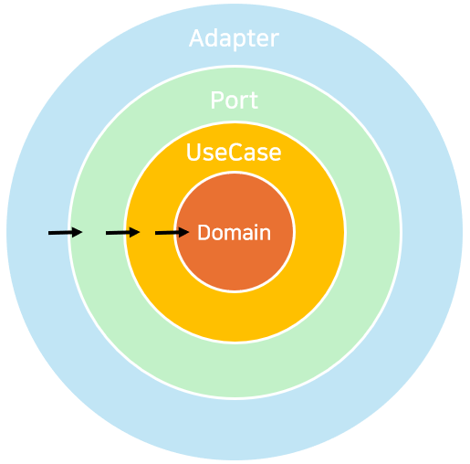
- 순수한 도메인 객체들을 가지고 있으며, 외부 프레임워크나 라이브러리를 일체 의존하지 않습니다.
- 도메인 객체에는 비즈니스의 핵심 가치를 지닌 도메인 규칙 및 로직이 존재합니다.
- 도메인 계층에 의존하여 애플리케이션에 특화된 규칙들을 정의하고, 도메인들을 가져와서 활용해 이를 적용하고 실행합니다.
- 반환 데이터가 필요하면 Adapter 계층으로 이를 내보냅니다.
- 웹, 영속성 관련 프레임워크나 라이브러리 등이 위치한 계층입니다.
- 크게 외부의 요청을 받는 InAdapter와 이를 받아서 내부 처리후 밖으로 반환하거나 영속화를 통해 외부 DB에 결과를 반영하는 역할을 하는 OutAdapter가 존재합니다.
- Adapter → UseCase 혹은 UseCase → Adapter으로 데이터를 중계하는 역할을 합니다.
- DIP를 활용해 Adapter와 UseCase 계층 사이의 결합도를 더욱 느슨하게 만들어줄 수 있습니다.
- 이러한 느슨한 결합을 통해 보다 명확한 계층 간 독립성을 확보하고 유지보수성 증대를 기대할 수 있습니다.
- 외부 라이브러리 의존성이 존재하지 않습니다.
도메인 응집도를 높여 외부 시스템&요구사항이 변경되더라도 소프트웨어의 품질을 보다 안정적으로 유지할 수 있도록 도메인 주도 설계 방식으로 개발을 진행하였습니다.
도메인을 외부로부터 온전하게 보호하기 위해 도메인 규칙 및 로직 관리의 책임을 지닌 순수한 도메인 객체와, 영속성의 책임을 지닌 테이블 객체로 분리하였습니다.
- 도메인 클래스는 도메인 개념의 명확한 이해를 위해 Value Object를 사용
- 영속성 테이블 클래스는 실제 테이블에 삽입되는 형식과 일치하도록 모두 Raw Field로 관리
- 필요에 따라 도메인 클래스에서 VO로 정의된 개념이 테이블 클래스에서는 별도 엔티티로 분리하기도 함
각 테이블 객체 간 의존성을 분리하여 독립적으로 보호하고 외래키로 인한 DB의 오버헤드를 방지하고자 직접참조가 아닌 간접참조 방식을 택했습니다.
- 생성자의 AccessLevel을 Private 타입으로 주어 외부 접근을 차단
withId(),withoutId()팩토리 메서드로 의도에 맞는 완전 객체만 생성되도록 강제- 도메인 내부에서 생성 규칙을 안전하게 관리
도메인 간 결합도를 낮추기 위해, 연계된 처리가 필요할 경우 Event를 활용하였습니다. 또한 이벤트 처리 시, 의도한 요구사항에 따라 트랜잭션 및 에러 핸들링을 처리하였습니다.
클린 아키텍처를 적용하여 도메인 객체와 영속성 객체를 분리한 상태이기에, PersistenceAdapter 계층에서 상태를 업데이트하려면 기존 조회되었던 엔티티 정보를 가져올 방법이 필요했습니다. 이를 위해 Loaded 패턴을 적용하여 내부 계층(Domain/UseCase)은 엔티티 객체의 존재를 모른 상태로 도메인 상태 변경에만 집중할 수 있도록 구성하였습니다.
public class Loaded<D> {
private final D domain;
private final Consumer<D> syncCallback;
public void update(Consumer<D> updater) {
updater.accept(domain); // 도메인 변경
syncCallback.accept(domain); // 영속성 동기화
}
}
- Persistence Adapter에서 Loaded 생성 시, JPA 엔티티 동기화 로직을 주입
- UseCase에서는 도메인 객체 변경을 Loaded 객체를 통해 실행
- Loaded 객체에서 update가 실행되면 엔티티 객체도 함께 동기화됨
- 트랜잭션 커밋 시 JPA 더티체킹이 동작하여 변경사함이 DB에 반영됨
각 데이터의 특성에 맞는 최적의 저장소를 선택하여, 하나의 DB로 모든 것을 처리할 때 발생하는 비효율을 해소했습니다.
회원, 메이트, 신청, 팔로우 등 핵심 비즈니스 데이터
관계형 데이터 간 정합성 보장이 중요하고, 트랜잭션/락 등 ACID 특성이 필수적인 도메인
채팅 메시지, 채팅방, 읽음 상태
비정형 메시지 데이터의 빠른 쓰기/읽기가 중요하고, 스키마 변경에 유연해야 하는 실시간 채팅 도메인
알림, 리프레시 토큰, SMS 인증 코드
TTL로 자동 만료되는 휘발성 데이터에 적합하며, 인메모리 특성으로 빈번한 읽기/쓰기에서도 높은 성능 보장
- Port 인터페이스로 각 저장소의 Adapter를 추상화하여, UseCase 계층은 어떤 DB를 쓰는지 모르는 구조
- 테스트 환경에서는 MongoDB/Redis를 Mock으로 대체하여 H2만으로 통합 테스트 수행
각 계층의 책임에 맞는 테스트를 설계하여, 변경에 안전하면서도 외부 의존성 없이 빠르게 실행 가능한 테스트 환경을 구축했습니다.
Spring 컨텍스트 없이
비즈니스 규칙 검증
Port를 Mock 처리하여
비즈니스 흐름 검증
Security 제외 후
요청/응답 구조 검증
QueryDSL 포함
쿼리 정합성 검증
UseCase → Adapter → DB
전체 플로우 검증
동시 요청이 발생할 수 있는 기능에 대해 경합 빈도와 비즈니스 특성에 맞는 동시성 제어 방식을 선택했습니다.
선착순 모집 시 동시 신청으로 정원을 초과하여 승인되는 Race Condition
낙관적 락으로 충돌 감지 + 자동 재시도 (최대 3회, 100ms backoff)
유저A: load(v=1) → 승인 → commit(v=2) ✅ 성공 유저B: load(v=1) → 승인 → commit 시 version 불일치! → 자동 재시도 → load(v=2) → 정원 초과 → 거절
메이트 모집글은 며칠간 열려있어 일반적으로는 신청이 자연스럽게 분산됩니다. 경합이 발생하려면 두 요청이 하나의 트랜잭션이 처리되는 짧은 시간 안에 동시에 들어와야 하는데, 이 서비스 특성상 그 확률은 낮아 대체로 저경합 환경이라고 판단했습니다. 다만 마감 임박 시점에는 신청이 집중될 가능성도 있으나, 현재 시점에서는 재시도 메커니즘으로 대응 가능한 수준이며 추후 이슈 발생 시 충돌 빈도에 따른 락 분기 처리 등의 리펙토링을 고려하기로 하였습니다.
충돌 시 서버에서 자동 재시도합니다. 재시도 간 100ms 지연을 두어 상대 트랜잭션이 커밋을 완료할 시간을 확보했습니다. 재시도 횟수를 너무 높이면 사용자 응답 지연이 길어지므로, 현재 서비스 규모에서 충돌이 연속 3회 이상 발생할 확률은 낮다고 판단하여 최대 3회로 제한하였습니다.
인기 모집글의 경우 동시 신청이 몰려 재시도가 빈번할 수 있습니다. 이를 대비하여 메이트별 재시도 횟수를 DB에 기록해두고, 향후 트래픽 증가로 성능 이슈가 관측되면 고경합 메이트에 한해 비관적 락으로 전환할 수 있도록 데이터 기반의 판단 근거를 확보해두었습니다.
조회 시점의 성능을 확보하기 위해, 승인된 유저수 데이터를 메이트 테이블에 비정규화하여 함께 들고 있던 상태였습니다. 하지만 낙관적 락을 적용하면서 Version 컬럼이 생겼는데, 글 수정과 신청 승인이 동시에 동작되었을 때, 의도가 전혀 다름에도 불구하고 같은 Version을 공유하여 둘 중 한 기능이 실패하게되는 문제가 발생했습니다.
── 문제 상황 (같은 Version 공유) ── 작성자: load mate(v=1) → 제목 수정 → commit(v=2) ✅ 성공 신청자: load mate(v=1) → 승인(count++) → commit 시 version 불일치! → 제목 수정과 무관한 신청인데 충돌 발생
메이트 신청 승인 시 승인 정원을 체크하는 로직이 존재합니다. 만일 비정규화를 제거하고 매번 COUNT 쿼리를 수행하면 정원 체크 시점과 저장 시점 사이에 Race Condition이 발생하므로, 승인정원 카운트만 별도 테이블로 분리하는 방식을 선택했습니다.
카운트 전용 테이블에 자체 Version을 부여하면 승인 정원 체크와 저장 시점 사이의 Race Condition을 카운트 전용 테이블의 Version 체크로 잡아낼 수 있고,글 수정과 신청 승인도 독립적인 Version으로 동작하여, 서로 다른 의도로 인한 실패 문제도 잡아낼 수 있게됩니다.
── 해결 후 (테이블 분리) ── 작성자: load mate(v=1) → 제목 수정 → commit(v=2) ✅ 성공 신청자: load count(v=1) → 승인(count++) → commit(v=2) ✅ 성공 → 서로 다른 테이블, 서로 다른 Version → 충돌 없음
CI/CD 무중단 배포
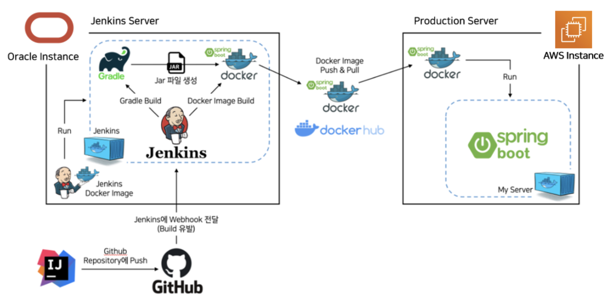
ports로 외부 노출, 나머지 컨테이너는 expose로 Docker Network 내부 통신만 허용하여 보안성 확보.
분산시스템 학습 프로젝트
2026.04 ~ 진행 중 · Backend · 1인 개발
프로젝트 개요
서비스가 성장해나가면서 겪게 되는 문제들을 경험하고 싶어 시작한 전형적인 게시판 프로젝트입니다. 실제 게시판과 유사한 형태로 행동하는 가상 유저를 늘려가며, 성능을 측정하고 문제를 발견하면 해결해나가는 형태로 진행 중입니다. 필요에 따라 서비스를 분리하거나 서버를 스케일 아웃하는 등 아키텍처도 지속적으로 변경되고 있습니다.
주요 기능
백엔드 학습이 목표이므로 화면 개발은 과감히 배제하였으며, 로그인 기능도 배제하여 아래 핵심 기능만 개발 진행하였습니다.
시스템 아키텍처
초기에는 단일 서버 모놀리틱 아키텍처로 출발했으며, 문제 해결 과정을 거쳐 아래 형태로 변화하여 크게 write 서비스, article-read 서비스, sub-read 서비스로 분리되어 있습니다. 비용 문제로 인해 호스트 1대의 자원을 Docker 컨테이너 단위로 분할하여 진행하고 있으며, 서버 1대의 최대 가용 자원은 CPU: 1.0(호스트의 1코어), 메모리: 512MB로 제한하는 규칙을 기준으로 잡았습니다.
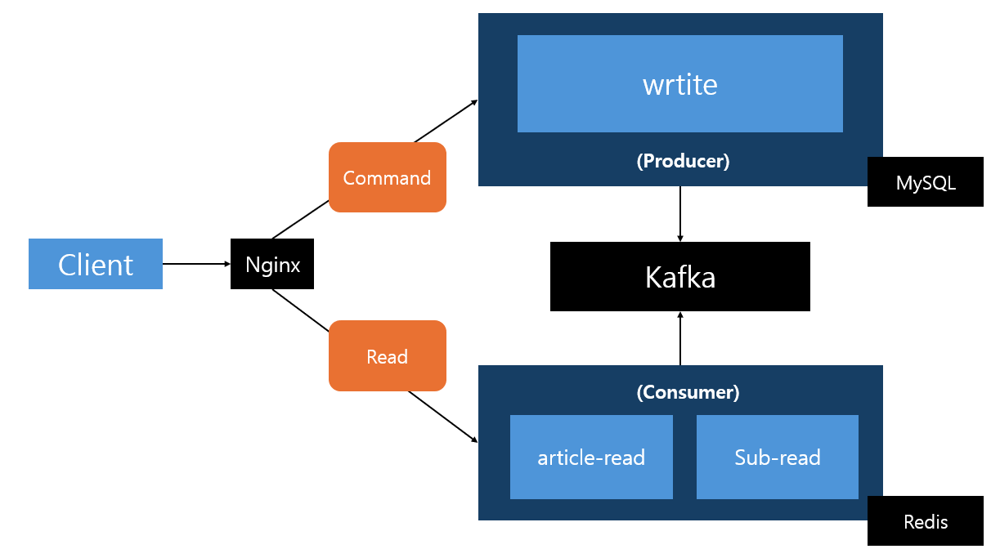
- write 서비스: 서비스의 모든 쓰기 기능을 담당하며, 조회수 데이터의 백업 처리도 수행합니다.
- article-read 서비스: 게시글 읽기 기능만을 담당합니다.
- sub-read 서비스: 보조 읽기 서비스 (게시글 읽기 외 읽기 기능들)
- Nginx: path 기반 3-way 라우팅 (write / article-read / sub-read)
- Kafka: 쓰기 서비스와 읽기 서비스들 사이의 이벤트 브로커로 활용하였습니다.
시나리오의 구성
Jakob Nielsen (UX 분야 권위자, NN/g 공동창립) 이 2006년에 발표한 커뮤니티 도메인의 참여 분포 경험 법칙입니다. Wikipedia, Yahoo Groups, 블로그 댓글 등 다양한 대형 커뮤니티에서 약 20년간 반복 관찰된 패턴으로, 시나리오에서 유저 행동의 확률에 대한 수치의 근거로 채택하여 최대한 실제 유저와 유사한 행동을 구현할 수 있도록 노력했습니다.
- 90% Lurker — 읽기만 하고 기여하지 않는 유저
- 9% Intermittent — 가끔 기여하는 유저
- 1% Heavy — 대부분의 콘텐츠를 생산하는 유저
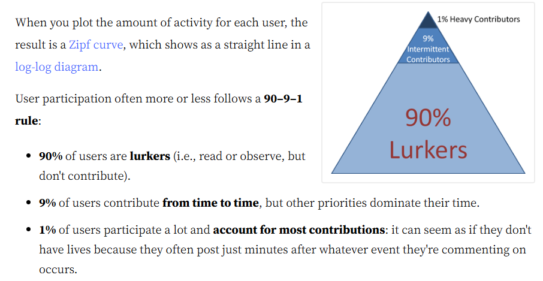
주요 트러블슈팅
각 섹션의 자세히보기 버튼을 클릭하면 상세내용을 확인하실 수 있습니다.
01. 데이터 저장소의 구성
게시판 서비스의 특성 상 읽기 요청이 압도적으로 많은 특성을 고려해 CQRS 구조를 초기부터 사용하기로 결정했습니다.
게시판의 워크로드 특성상 읽기 요청이 압도적으로 많고 그 대부분이 단순한 목록 / 상세 / 인기글 / 댓글 조회라는 점은 서비스 설계 초기부터 분명했습니다. 그래서 부하 측정을 시작하기 전, 데이터 저장소를 어떻게 구성할 것인가 부터 의사결정이 필요했습니다.
읽기 저장소로 가장 자연스러운 선택은 이미 사용할 MySQL 의 Read Replica 를 활용하는 것이었습니다. 다른 대안으로 Redis 에 비정규화된 Query Model 을 별도로 구축하는 방식도 검토했습니다.
| 선택지 | 장점 | 단점 |
|---|---|---|
| MySQL Replication (Read Replica) |
운영 친숙, SQL 자산 재사용, 쿼리 유연성 유지, 트랜잭션 일관성 관리 용이 | 쓰기와 동일한 쿼리 엔진 / 디스크 IO 특성 공유, 조인 · 정렬 부담 유지 등으로 인해 상대적으로 느린 성능, Replication Lag 관리 필요 |
| Redis Query Model (비정규화된 읽기 전용 저장소) |
인메모리 O(1) 접근, 비정규화로 조회 한 번에 완결 등으로 매우 빠른 성능, 저장소 특성 자체가 읽기에 최적 | Query Model 을 별도 설계해야 함, 쓰기 → 읽기 동기화 로직 필요 |
(모놀리스)
쓰기 트랜잭션 · 본 데이터
Query Model · 읽기 전용
- 쓰기 요청 → MySQL 에 본 데이터 변경
- 읽기 요청 → Redis Query Model 에서 비정규화된 데이터 O(1) 조회
- 쓰기 성공 후 Redis Query Model 을 애플리케이션 내부에서 동기 업데이트
02. 서버 자원 한계 봉착
서버의 CPU에 부하가 확인되어 자원을 사용하는 비율을 엔드포인트별로 확인 후, 스케일 아웃하되 읽기, 쓰기 서비스로 분리하였습니다.
트래픽을 늘려가며 JVM 내부의 어떤 자원 (CPU / 스레드 / DB connection pool / GC) 이 먼저 포화되는지 단계별로 측정해 나갔습니다.
VU 를 점차 올려가며 측정한 결과, 부하의 첫 신호는 HikariCP (DB connection pool) 에서 나타났습니다.
| Stage | 조건 | 관측 |
|---|---|---|
| Stage 2 | 모놀리스 ×1, VU 200 | CPU 81% + Hikari pending 5 — 첫 신호 등장 |
| Stage 4 | 모놀리스 ×1, VU 1,500 | CPU 70% + Hikari pending 16 + GC 9 ms/s — DB pool 이 병목 |
| Stage 5 | pool size → 30 으로 확대 | p95 89ms → 29ms, pool pending 해소 |
| Stage 6 | pool 30 유지, VU 3,000 밀어붙임 | CPU 100% + Hikari pool 30 완전 포화 + GC 17 ms/s |
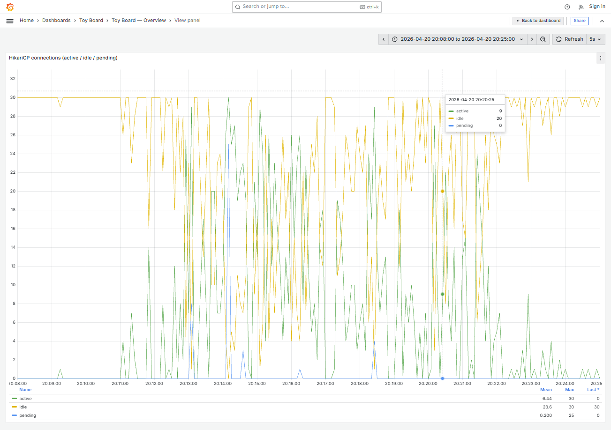
Stage 6 에서 단일 노드의 실질 운용 한계에 도달한 것으로 판단했습니다. CPU 도 포화, DB pool 도 포화, GC 도 급증 — 더 이상 단일 노드 내부 튜닝으로는 해결할 수 없는 상태였습니다.
모놀리스 인스턴스를 2개로 늘리고 앞단에 Nginx 를 두어 부하를 분산했습니다. 같은 VU 3,000 조건에서:
- RPS 306 → 310 (수치 유지되면서 실패율 급감)
- 각 인스턴스 CPU ~37% (절반 수준)
- Hikari active 3~4 / 30 — pool 병목 완전 해소
- p95 506ms → 16.5ms
여기서 관측된 DB 접근 layer 병목은 "저장소 분리" 가 아니라 "애플리케이션 수평 확장 + pool 나눠쓰기" 로 해소되었습니다. 다만 트래픽을 더 밀어붙였을 때 어떤 병목이 드러날지 확인이 필요했습니다.
VU 를 6,000 까지 밀어붙여 한계를 재탐색했습니다. RPS 는 310 → 604 로 선형 확장에 성공했지만, 자원은 다시 포화 지점에 도달했습니다.
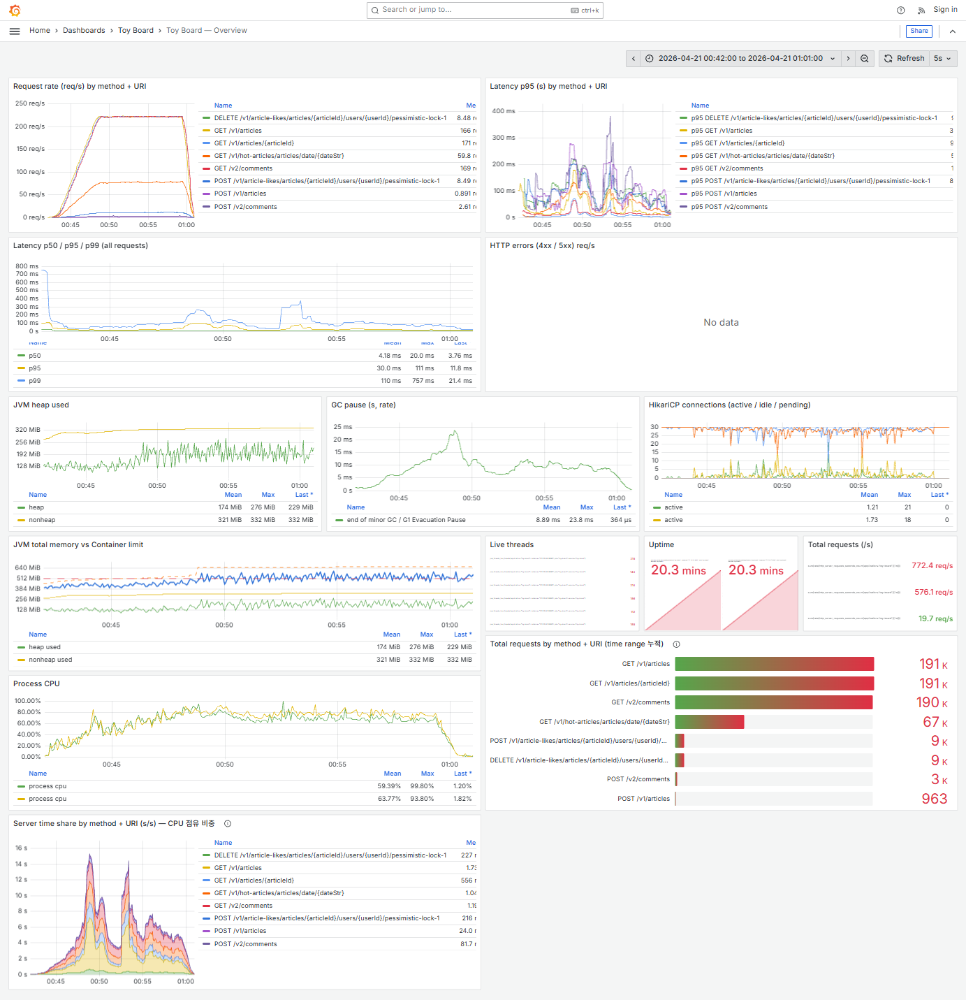
주목할 점은 이번엔 HikariCP pending 이 0 이라는 것입니다. DB 쪽은 여유로운데 애플리케이션은 포화 — 병목은 JVM 자체의 CPU 에 있다는 뜻입니다. 그렇다면 CPU 의 대부분을 어떤 요청이 소비하고 있는지 엔드포인트별로 분리해 관찰해봤습니다.
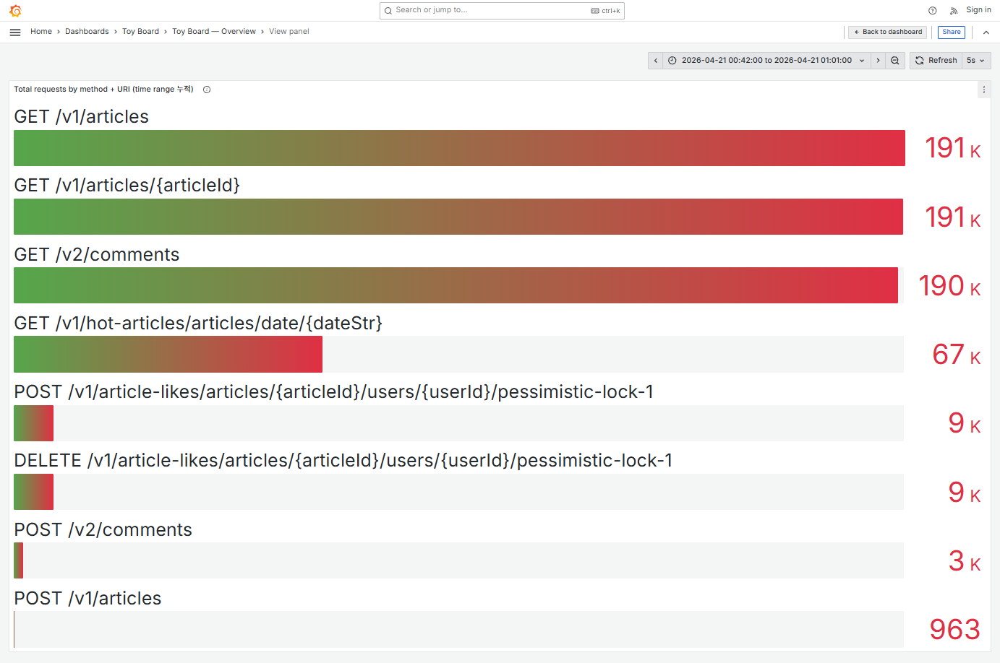
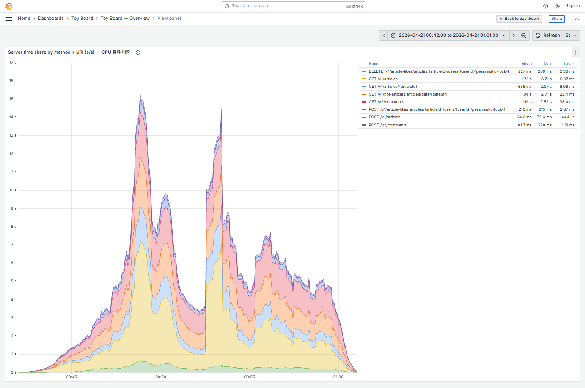
저장소는 CQRS 로 분리되어 있지만 애플리케이션 레벨에서 읽기와 쓰기가 여전히 같은 JVM 을 공유하고 있었고, 트래픽의 96.7% 를 차지하는 읽기가 JVM 의 거의 모든 CPU 를 잡아먹고 있었던 것입니다. 이 구조에서는 인스턴스를 몇 개 더 띄워도, 그 인스턴스 CPU 의 약 90% 는 또다시 읽기를 위해 소비됩니다.
| 대안 | 평가 |
|---|---|
| 수직 확장 (더 큰 인스턴스) |
이미 이 서버는 자원 한계만큼 할당되어있음 |
| 인스턴스 1대 그냥 늘리기 |
3.3% 에 불과한 쓰기 기능 때문에 불필요하게 자원이 낭비하게됨 |
| 읽기 서비스를 별도로 분리하여 스케일아웃 | 읽기/쓰기 트래픽 각각 담당 책임 인스턴스가 분리되어 자원을 효율적으로 이용할 수 있게됨 |
이 시점까지 Redis Query Model 동기화는 쓰기 서비스 내부에서 Spring Event를 활용해 각 도메인 로직의 독립성은 확보하기 위해 노력한 상태였지만, 결국 직접 호출하는 방식이었습니다. 서비스를 물리적으로 분리하면 이 호출이 네트워크 통신이 필요하게 되고, 결과적으로 쓰기 장애가 읽기 영역으로 전파될 수 있었습니다. 쓰기와 읽기의 결합도를 실제로 차단하려면 비동기 이벤트 기반으로 전환해야 했습니다.
따라서 이벤트 브로커를 도입하기로 결정했습니다.
현재 프로젝트 구조상 하나의 이벤트에 대해 여러 도메인이 수신하여 처리해야 하며, 앞으로 consumer 의 수가 얼마든지 증가할 수 있습니다 (인기글 집계 / 통계 / 알림 등). 하지만 RabbitMQ 는 한 메시지에 대해 한 consumer 가 정확히 처리하는 것에 특화된 모델로, 이 프로젝트의 이벤트 브로커로는 부적합하다고 판단해 배제했습니다.
| 자원 | Redis Streams | Kafka | 배수 |
|---|---|---|---|
| RAM | ~120 MB | ~1 GB | ~8배 |
| 디스크 (24h retention) |
~100 MB | ~5~10 GB | ~50~100배 |
| 이미지 | ~25 MB (alpine) | ~570 MB | ~20배 |
Redis Streams 를 선택한다면 하나의 Redis 인스턴스로 캐싱 / 읽기 쿼리 / 이벤트 스트리밍까지 모두 처리하는 건 부담이 되므로이 되므로, 이벤트 스트리밍 전용 Redis 인스턴스를 새로 올리는 편이 합리적일 것입니다. 그런데 어차피 새 인스턴스를 추가한다면, 앞으로 지속적으로 서비스가 성장하며 부하가 증가할 것을 고려했을 때 높은 트래픽 처리량과 확장성 · 안정성을 갖춘 Kafka 를 선택하는 편이 더 합리적이라고 판단했습니다.
※ 확장성과 안정성: "확장성과 안정성이 좋다" 는 것은 다중 broker 클러스터 환경에서 본격적으로 체감 가능한 강점으로 알고있어, 본 프로젝트 진행 과정에서는 즉시 드러나지 않을 수 있을 것입니다. 하지만 Kafka 도입 시 고려해야할 단점은 메모리와 디스크를 상대적으로 많이 잡아먹는 것인데, 이정도의 단점보다는 향후 확장의 정도에 따른 잠재적으로 높은 대응성을 취하는 것이 보수적으로 봤을 때 더 합리적이라고 판단하였습니다.
또한 Redis Streams 는 인메모리 기반으로 초저지연 실시간 메시징에 강점이 있지만, 이 프로젝트의 이벤트 처리는 Query Model 업데이트 · 인기글 집계 등 최종 일관성만 맞으면 되는 수준이므로 초저지연까지는 굳이 필요하지 않았습니다. 결론적으로 Kafka 를 이벤트 브로커로 선택했습니다.
Event Broker
- write-app: MySQL 본 데이터 쓰기
- Kafka: 이벤트 브로커 — 읽기 / 쓰기 결합도 차단 레이어
- read-app: 독립 배포 / 독립 확장, Redis Query Model 기반 고속 조회
분리 직후 Stage 9 에서 동일 VU 6,000 부하로 재측정했습니다. 주요 지표 전반에서 개선을 보였습니다.
| 지표 | Stage 8 (분리 전) | Stage 9 (분리 후) | 변화 |
|---|---|---|---|
| p50 latency | 4.31 ms | 2.79 ms | −35% |
| p95 latency | 59.4 ms | 19.1 ms | −68% |
| CPU (쓰기) | 99.8% / 93.8% (포화) | write-app mean 30.7% / max 74% | 여유 확보 |
| CPU (읽기) | (쓰기와 같은 JVM 에서 포화) | read-app mean 44~50% / max ~82% | 여유 확보 |
| Kafka consumer lag | — | 0 (전 구간 · 전 topic) | 실시간 전파 유지 |
| 실패율 | 0.00% | 0.00% | 유지 |
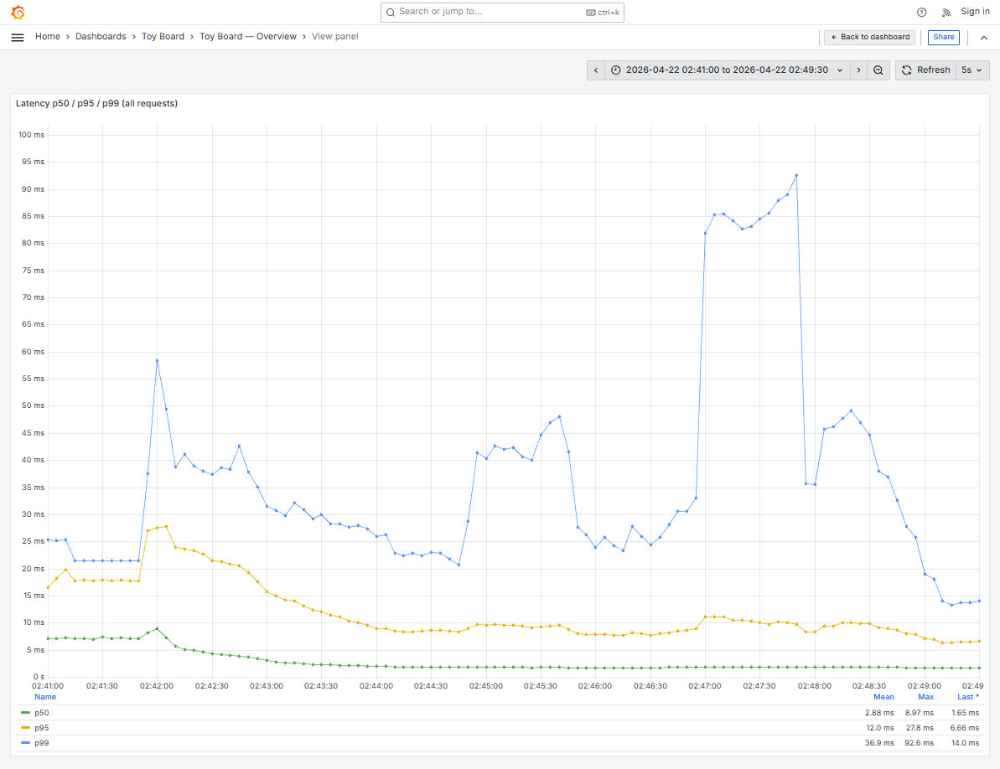
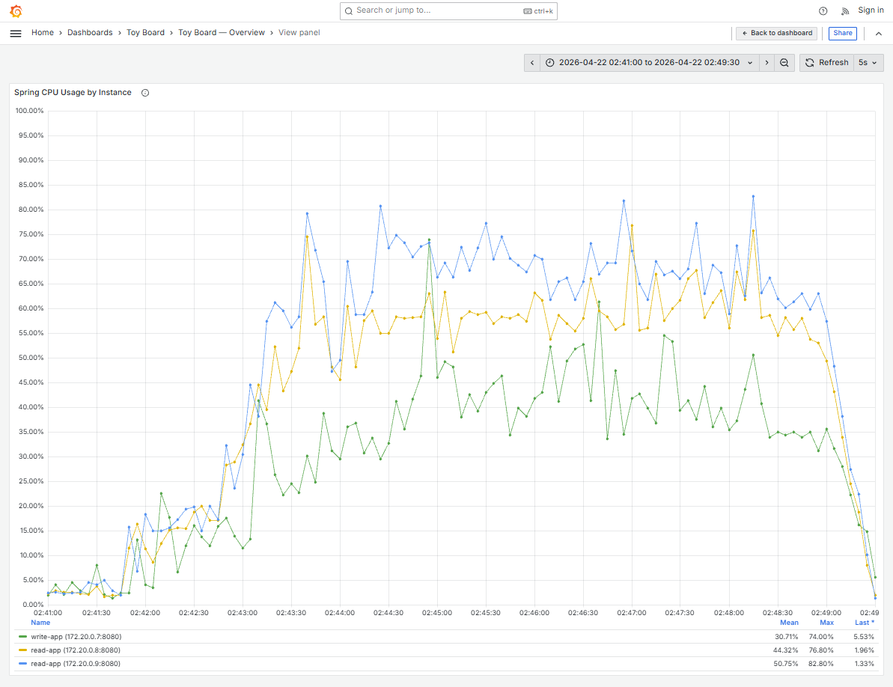
한 가지 주목할 점은 한계 RPS 자체는 604 → 550 으로 약간 감소했다는 것입니다. nginx path 라우팅 오버헤드와 새로 추가된 이벤트 발행 요인으로 유추되지만, 이는 분리가 만든 구조적 여유 (p95 −68%, 각 서비스 CPU 여유) 를 확보한 대가로 충분히 수용 가능한 수치입니다. 오히려 이제부터는 read-app 만 독립적으로 수평 확장할 수 있으므로, 읽기 트래픽 증가 시 선형으로 RPS 를 늘릴 수 있는 구조가 확보되었습니다.
03. 읽기 서비스 한계 봉착 — 도메인 경계로 재분리
분리된 읽기 서비스에도 과부하가 생겨, CPU 사용 비율을 이번에는 도메인 단위로 측정한 뒤 → article-read / sub-read 두 도메인으로 재분리를 진행했습니다.
read / write 서비스 분리가 성공한 뒤, read-app 인스턴스를 수평 확장하며 읽기 처리량을 늘려갔습니다.
RPS 는 961 까지 올라갔지만 실패율 2.53%였고, p99 max 가 1.49 s 까지 매우 느린 수치로 관찰되었습니다.
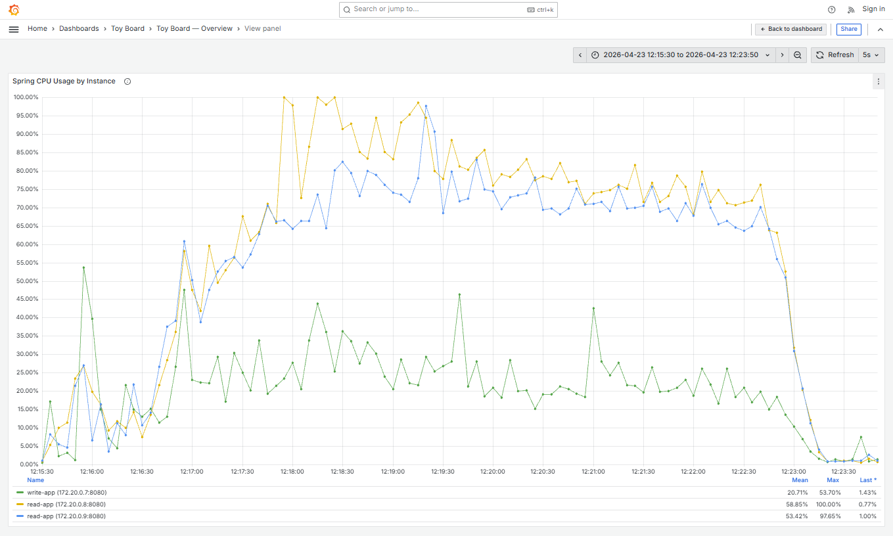
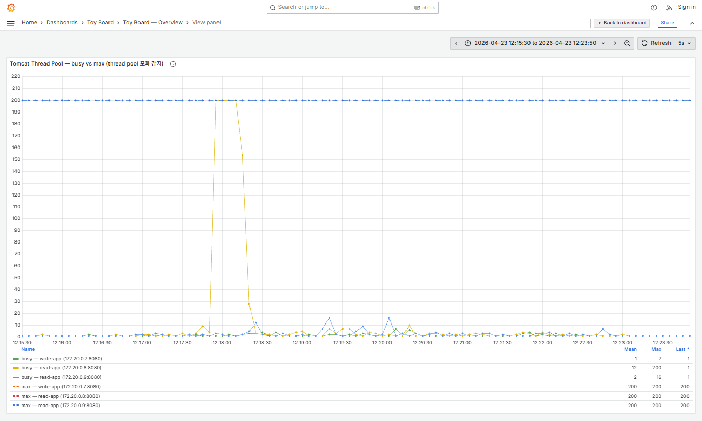
추가 관측에서 Redis 는 완전 유휴, read-app → write-app HTTP 호출도 mean 0.015 수준으로 미미했습니다. 외부 I/O 는 여유로운데 JVM 내부의 Tomcat worker 가 포화되어 대기 큐가 쌓이고 있었던 것입니다 (timed-waiting max 224). 병목 지점은 외부가 아니라 read-app 내부 자원이었습니다.
read-app 포화가 관측된 이 시점에서 하나의 질문이 떠올랐습니다 — "한 읽기 기능(예: 게시글 목록 조회) 에 부하가 몰렸을 때, 같은 JVM 에 존재하는 다른 읽기 기능들 (인기글 · 댓글 등) 까지 같이 영향을 받는가?". 이 부하 전파 가능성을 확인하려 먼저 엔드포인트 군별 워크로드 특성을 분리해 들여다봤습니다.
| 엔드포인트 군 | 워크로드 특성 |
|---|---|
/v1/articles* |
범용 목록 / 상세 — 단일 Query Model 기반 KV 조회, 캐시 hit 패턴 균등 |
/v1/hot-articles* |
Top-N 집계 — 랭킹 데이터, 특정 키에 hotspot 집중, Kafka consumer 와 동시 동작 |
/v2/comments* |
연관 리스트 — 여러 Query Model 조합, 캐시 stampede 잠재 영역 |
성격이 서로 다른 세 기능이 같은 JVM 에서 Tomcat worker pool · 캐시 · 스레드 프로파일을 공유하고 있었습니다. Stage 12 의 실측에서 이 공유 구조가 실제로 부하 전파 현상을 만들고 있음이 두 가지 형태로 드러났습니다:
- HTTP 경로의 전파 —
/v1/articles부하로 Tomcat busy 가 200 에 도달한 시점 이후, 같은 JVM 의 다른 읽기 엔드포인트 (/v1/hot-articles,/v2/comments) latency 도 함께 폭증. worker pool 을 공유하다 보니 한 기능의 요청이 쌓이면 다른 기능 요청도 같은 대기 큐에 함께 쌓임. - Kafka consumer 경로의 전파 — HTTP 요청뿐 아니라 같은 JVM 에서 돌던 hot-article Kafka consumer 의 메시지 소비까지 일시 지연 (lag mean 17, max 136). HTTP worker 가 CPU 를 점유하면서 consumer 스레드까지 자원을 빼앗긴 현상.
즉 "한 기능의 부하가 관련 없는 다른 기능들로 전파되는" 구조적 문제가 확인되었습니다. 이 전파를 막으려면 기능 간 물리적 격리 — 다른 JVM 에 나눠 배치하는 것 — 가 필요했습니다.
실제로 "무엇을 메인 서비스로 독립시키고 무엇을 묶을 것인가" 는 추가 관측이 필요했습니다. Stage 12 의 엔드포인트별 부하 분포를 자세히 들여다봤습니다.
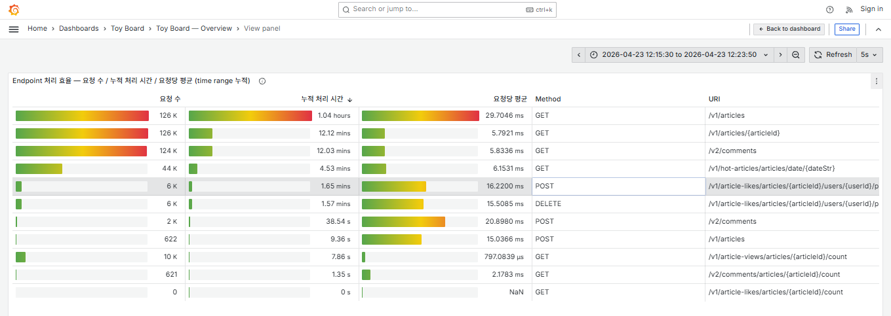
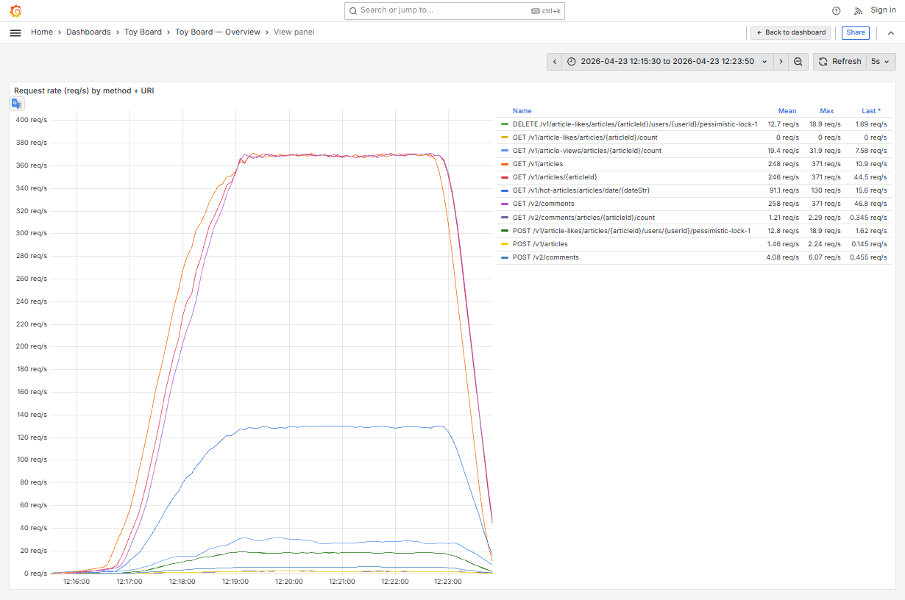
GET /v1/articles 가 235~250 req/s 에서 Tomcat pool 포화, 이 시점 이후 전체 엔드포인트 지연이 폭증
관측 결과 세 가지 기준이 모두 /v1/articles* 를 가리켰습니다:
| 기준 | 관측 |
|---|---|
| 처리량 한계 결정 | GET /v1/articles 가 235~250 req/s 에서 Tomcat pool 포화 — 이 시점 이후 다른 엔드포인트의 latency 도 함께 폭증. 즉 read-app 의 처리량 한계를 결정짓는 엔드포인트. |
| 도메인 응집도 | /v1/articles* 는 "메인 게시글 목록 / 상세 조회" 라는 단일 도메인. 반면 /v1/hot-articles* (랭킹 집계) 와 /v2/comments* (연관 리스트) 는 "보조 기능" 카테고리로 자연스럽게 묶임. |
| Kafka consumer 격리 효과 | hot-articles 는 별도 Kafka consumer (Top-N 업데이트 로직) 를 포함. 이 consumer 까지 함께 격리하려면 hot + comments 를 한 서비스로 묶어 main(articles) 과 분리하는 구조가 자연스러움. |
- article-read:
/v1/articles*전담 — 처리량 한계 주 요인 + 메인 도메인 → 독립 서비스로 분리 scale-out 효과를 가장 크게 볼 수 있는 도메인 - sub-read:
/v1/hot-articles*+/v2/comments*— 보조 도메인 통합 + Kafka hot-article consumer 를 article-read 로부터 격리
즉 "트래픽 절대값" 이 아니라 "처리량 한계를 결정짓는 엔드포인트 + 도메인 응집도 + Kafka consumer 격리 효과" 세 기준이 맞아떨어지는 축을 선택했습니다.
분리 직후 동일 VU 12,000 부하로 재측정했습니다. Latency · Tomcat busy · Kafka consumer 영향 모두 개선됐습니다.
| 지표 | Stage 12 (분리 전) | Stage 13 (분리 후) | 변화 |
|---|---|---|---|
| p95 latency | 56.8 ms | 40.4 ms | −29% |
| p99 mean | 194 ms | 119 ms | −39% |
| p99 max | 1.49 s | 559 ms | −62% |
| Tomcat busy (article 담당) | 200 지속 포화 (hold 구간 내내) | 단발 1회 도달 후 즉시 해소 (mean 7) | 포화 지속 해소 |
| Tomcat busy (sub 담당) | (분리 전 동일 JVM 공유) | max 13 (완전 여유) | 격리 확보 |
| Kafka hot-article consumer lag | mean 17 / max 136 (일시 지연) | 0 (전 구간) | 영향 격리 |
04. 페이지네이션의 효율적 처리 문제
대량의 데이터(약 1,200만 건)가 존재하는 상황에서 게시글 목록 조회를 실행하니 4초나 소요되었습니다. 이에 쿼리 플랜을 확인한 뒤, 인덱스와 Covering 인덱스를 적용하여 페이지수가 매우 높을 때도 약 0.2초가 소요되도록 개선하였습니다.
저장소를 CQRS 로 분리했지만 쓰기 트랜잭션용 MySQL 에서는 여전히 다양한 조회 쿼리가 필요했습니다. 약 1,200만 건 규모의 article 테이블에서 가장 먼저 부딪친 건 목록 조회 성능 이었습니다. 단순히 SELECT ... ORDER BY created_at DESC LIMIT 30 OFFSET N 식의 기본 쿼리조차 실행 시간이 수초대로 나왔습니다.
초기 쿼리와 그 실행 계획입니다:
SELECT * FROM article WHERE board_id = 1 ORDER BY created_at DESC LIMIT 30 OFFSET 90;
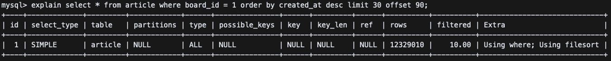
- Type = ALL: 전체 1,200만 건을 Table Full Scan
- rows = 12,329,010: 필터 조건 (
board_id = 1) 을 적용하기 위해 전체 행을 스캔 - Extra = Using where; Using filesort: 정렬을 메모리에서 해결 못 해 디스크에서 filesort 수행
1,200만 건에 대해 Full Scan + 디스크 정렬이 반복되니 수초가 걸리는 건 당연한 결과였습니다.
게시판 별로 필터링 (board_id) + 최신순 정렬에 맞춰 복합 인덱스를 생성했습니다. 분산 시스템을 고려해 Snowflake 로 채번하는 article_id 를 최신순 정렬 키로 활용했습니다 (생성 시간 순으로 증가 보장).
CREATE INDEX idx_board_id_article_id ON article (board_id, article_id); SELECT * FROM article WHERE board_id = 1 ORDER BY article_id DESC LIMIT 30 OFFSET 90;
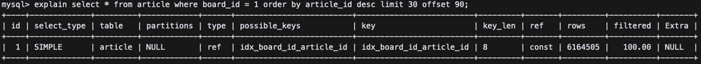
- Type = ref: Table Full Scan 제거, 인덱스 기반 접근으로 변경
- key = idx_board_id_article_id: 방금 생성한 복합 인덱스 사용
- Extra = NULL:
Using where·Using filesort모두 사라짐
결과: 약 4초 → 0초대 로 대폭 개선.
일반적인 페이지 (작은 OFFSET) 는 잘 동작했지만, OFFSET 이 매우 커지는 상황 (예: 50,000 번 페이지 = OFFSET 1,499,970) 에서 다시 약 4초가 소요됐습니다. 그런데 EXPLAIN 은 여전히 인덱스를 잘 타고 있었습니다.
SELECT * FROM article WHERE board_id = 1 ORDER BY article_id DESC LIMIT 30 OFFSET 1499970;
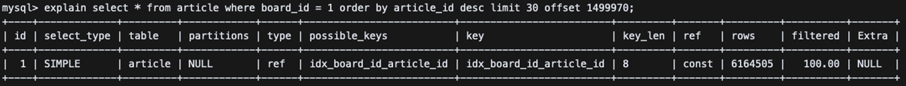
EXPLAIN 상으로는 인덱스를 제대로 쓰는데 실제 실행은 여전히 느린 모순. 인덱스 탐색 자체가 아니라 인덱스 탐색 이후의 과정 에 숨은 비용이 있다고 추정했습니다.
생성한 복합 인덱스는 Secondary Index 입니다. SELECT * 로 전체 컬럼을 가져오려면 Secondary Index 에서 얻은 article_id 를 가지고 Clustered Index (본 테이블) 를 한 번 더 탐색 해야 합니다 — 인덱스 트리를 두 번 타는 구조.
- Secondary Index 에서 조건에 맞는 행을 찾은 뒤, 실제 데이터를 가져오려면 Clustered Index 에 별도로 접근 필요
- OFFSET 이 작을 땐 (30건 앞 90건 = 총 120행) Clustered Index 접근도 적어 빠름
- OFFSET 이 매우 클 때 (1,499,970 이후 30건) 는 필요한 30건을 얻기 위해 앞의 약 1,500,000 행 전체에 대해 Clustered Index 접근이 발생
- 사용자에게 실제로 반환되는 건 30행이지만, 디스크 IO 는 약 1,500,000 회 — 이것이 4초의 실체
인덱스에 포함된 컬럼 (board_id, article_id) 만 먼저 뽑아내면 Secondary Index 만으로 결과를 완결할 수 있어 Clustered Index 접근이 사라집니다 (Covering Index). 이렇게 먼저 뽑아낸 30개의 article_id 에 대해서만 Clustered Index 를 Join 으로 접근하면, 실제 디스크 IO 는 30회로 제한됩니다.
select * from ( select article_id from article where board_id = 1 order by article_id desc limit 30 offset 1499970 ) t left join article on t.article_id = article.article_id;
- Sub Query 단계 — Secondary Index 만으로 article_id 30 개 추출 (Covering Index 동작, Extra = Using index)
- Join 단계 — 추출된 30 개의 article_id 에만 Clustered Index 접근
- Clustered Index 접근 횟수: 약 1,500,000 회 → 30 회 (약 50,000 배 감소)
Secondary Index → Clustered Index 접근하는 리소스 비용이 생각보다 굉장히 크다는 사실을 알 수 있었습니다. 이는 인덱스를 설계할 때 굉장히 중요한 포인트가 될 수 있을 것입니다. 이에 따라 최초 인덱스를 설계할 때, Covering Index가 가능하도록 설계하는 방향을 고려하는 것은 좋은 방향이 될 것 같다고 느꼈습니다.
05. 조회수 어뷰징 문제
어뷰저의 반복 조회로 인기글 데이터가 왜곡될 수 있는 문제를 방지하기 위해 분산 Lock을 적용하여 조회수 카운트를 10 분당 1 회로 제한 처리하였습니다.
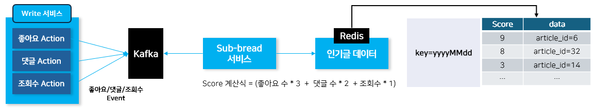
인기글 기능은 위 처럼 좋아요, 댓글, 조회수 이벤트가 발생하면, 인기글 서비스에서 일 단위로 점수를 계산하여 상위 10건을 선정하고 있습니다.
여기서 만약 악의적인 사용자(어뷰저)가 특정 게시글을 일부러 여러 번 조회한다면 조회수 데이터가 조작되게 되고, 인기글도 어뷰저가 원하는 대로 조작이 충분히 가능할 것 같다는 생각이 들었습니다. 이는 인기글 기능을 구현할 때 방어를 반드시 해야 하는 문제로 생각되어 개선해보기로 했습니다.
먼저 데이터 조작을 시도하는 사용자를 식별하기 위한 기준을 정해야 했습니다. 기준은 크게 로그인한 사용자와 비로그인 사용자로 나눌 수 있습니다.
로그인한 사용자의 Key 값으로 식별 가능
IP, User-Agent, 브라우저 쿠키, 토큰 등 다양한 방법으로 식별 가능
어뷰징 방지는 처음 적용해보는 것이기도 하고, 식별하기 위한 기준만 달라질 뿐 원리는 동일하다고 느껴 우선 간단하게 로그인 사용자 별로 어뷰징 방지를 구현해보기로 했습니다.
각 사용자는 게시글 1개당 10분에 1번씩만 조회수를 증가시킬 수 있다.
최대 약 1,200만 건의 게시글 데이터 각각에 대해 사용자 별로 상태를 관리해야 하는데, 메모리 상에서 이렇게 많은 상태를 관리하기에는 비효율적이므로 DB를 상태 저장소로 채택했습니다. 약 10분 정도면 어뷰징 방지도 어느정도 가능하면서, 캐싱 등을 활용하면 DB 용량도 꽤 효율적으로 사용가능할 것이라 판단하여 10분 동안 상태를 관리하기로 결정했습니다.
| 비교 항목 | MySQL | Redis |
|---|---|---|
| 빠른 성능 | 디스크 기반 | In-memory 기반으로 유리 |
| 동시성 핸들링 | 동시 요청 시 Lock 점유 필요 | 싱글 스레드 직렬 처리로 Lock 불필요 |
| 자동 삭제 | 배치 시스템으로 별도 구현 필요 | TTL로 자동 삭제 가능 |
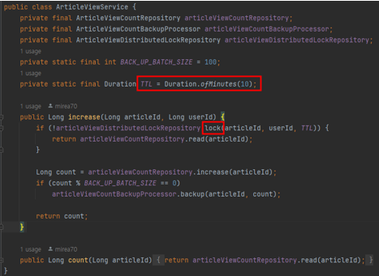
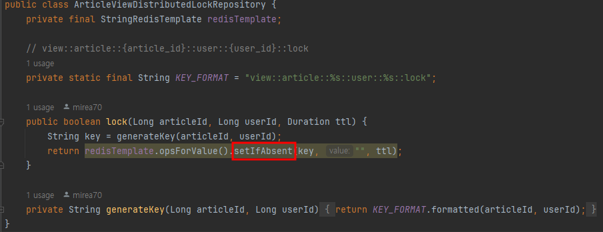
- TTL을 10분으로 하여, Redis를 사용해 해당 게시글 ID, 사용자 ID에 대해 setIfAbsent로 Lock을 걸어줍니다
- Lock 획득에 성공하면 조회수를 카운트하고, 이후 동일한 사용자가 동일한 게시글을 다시 조회했을 때 10분이 지나지 않았다면 Lock 획득에 실패하여 조회수는 카운트되지 않습니다
- 사용자는 10분 내에 여러 번 동시에 조회 시도하더라도 Redis로부터 분산 Lock을 단 1번만 획득 가능합니다
완성된 시스템을 다시 도식화해보면 위와 같습니다.
사용자1은 10분 내에 여러 번 동시에 게시글1을 조회 시도하더라도 Redis로부터 분산 Lock을 단 1번만 획득 가능합니다.
이에 따라 10분 동안 사용자1은 게시글1에 대해 조회수를 단 1번만 증가시킬 수 있게 되었습니다.
Redis를 상태 저장소로 선택한 덕분에 TTL을 통해 10분 만료를 자동 처리할 수 있어 별도의 정리 로직이 불필요했습니다. 또한 분산 환경에서 여러 API 서버가 동일한 Redis를 바라보므로 어떤 서버로 요청이 들어오든 일관된 어뷰징 방지가 보장됩니다. 향후 트래픽이 더 커지면 Redis Cluster로 수평 확장이 가능하다는 점도 확장성 측면에서 좋은 선택이었다고 생각합니다.
06. 이벤트 유실 방지에 대한 고려
Kafka는 외부 시스템이기 때문에 쓰기 서비스의 로직과 이벤트 전송이 원자성을 보장하지 못한다는 문제가 있었습니다. 이에 Outbox 테이블을 추가하여 MySQL의 트랜잭션을 활용해 쓰기 로직이 정상적으로 처리될 경우 반드시 이벤트도 발행할 수 있도록 하였습니다.
현재 아키텍처 구조 상, 분산되어 있는 서로 다른 서비스 간 연계 처리는 Kafka를 통해 Event로 처리하고 있습니다.
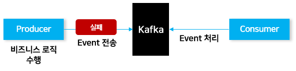
그런데 만약 Producer가 자신의 비즈니스 로직 수행은 성공했지만, Event 전송 중 Kafka, 네트워크 이슈 등의 문제로 장애가 발생한다면 어떻게 될까요?
인기글 기능을 예로 들면, Producer인 Write 서비스에서 좋아요가 수행되고 이벤트 전송까지 하였지만, 실제 Kafka에는 해당 이벤트가 저장되지 않았을 때, 좋아요는 증가하겠지만 증가한 좋아요 수가 Consumer 서비스에서 인기글 데이터를 최신화하는데 필요한 점수 계산에 반영이 안될 것입니다.
즉, 이벤트가 유실되어 데이터 정합성 문제가 발생할 수 있을 것이라 예상되었습니다. 이 문제를 해결하기위해서는 서로 분산된 시스템 사이의 트랜잭션을 보장하기 위한 매커니즘이 추가적으로 필요하다고 판단되었습니다.
| Two Phase Commit | Transactional Outbox | |
|---|---|---|
| 장점 | 실시간으로 강력한 일관성 보장 | 이벤트 유실 가능성 없음, 실패 시 재전송 가능 |
| 단점 | 락 유지시간이 길어질 수 있어 성능 저하 우려, 보상 트랜잭션의 복잡성 | 추가 Outbox 테이블 관리 필요 |
Consumer로 구현되는 게시글 조회 서비스에 비정규화 Query Model의 업데이트, 인기글 서비스 정도이므로 이벤트 처리가 꼭 실시간으로 강력하지 않고 최종적인 데이터 정합성만 맞는다면 상관이 없다고 여겨졌습니다. 더군다나 이벤트 전송이 실패해도 얼마든지 별도로 재전송이 가능합니다.
Table
Table
(10초 간격 Polling)
Relay
- Producer 서비스는 비즈니스 로직을 수행하며 본 데이터의 상태 변경과 Outbox Table 이벤트 기록을 단일 트랜잭션으로 처리합니다
- Message Relay는 Outbox Table에서 미전송 데이터를 주기적으로 Polling(10초 간격)하여 조회하고 Kafka로 전송합니다
- 10초도 여전히 너무 길 수 있으므로, Producer 로직이 수행되면(트랜잭션 커밋되고나면) Message Relay로 이벤트를 즉시 전달하여 Kafka로 바로 이벤트 전송을 시도합니다
- 이후 Polling은 전송에 실패한 이벤트들에 대해서만 처리되도록 하였습니다
- 전송 완료된 이벤트는 더 이상 필요없으므로 삭제 처리하였습니다
- 이벤트 즉시 전달 처리와 Polling은 각각 별도의 Thread로 할당하여 처리되도록 하여 성능을 극대화하였습니다
- 이벤트 Polling은 Spring의 Scheduler를 활용하여 10초마다 정기적으로 실행되도록 하였습니다
- @TransactionalEventListener(BEFORE_COMMIT)으로 Outbox 이벤트를 Commit 직전에 저장하고, AFTER_COMMIT으로 커밋 후 즉시 Kafka 전송을 시도합니다
07. 캐시 만료 타이밍에 대한 동시성 이슈
캐시 만료 직후 동시 요청이 몰리면 모두 원본 API 호출하게되는 문제를 확인하여, TTL을 물리적/논리적으로 분리해서 캐싱 단위를 묶음 처리하여 해결하였습니다.
게시글 조회 응답을 만들려면 본문 데이터 외에 write 서비스에 있는 조회수 데이터도 함께 필요했습니다. article-read 서비스에서 조회수 데이터를 어떻게 가져올지가 본 설계의 출발점이었습니다.
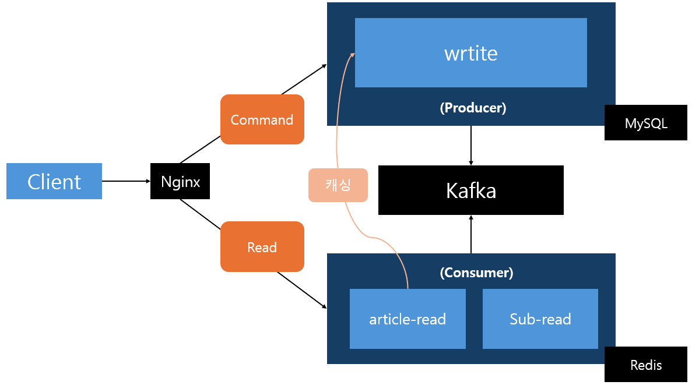
- 조회수는 읽으면서 동시에 트래픽이 발생하는 데이터 → 변경마다 이벤트를 발행해 Query Model을 최신화하는 것은 통신비용 측면에서 비효율적이라고 판단
- 조회수 데이터는 일관성 요구가 비교적 낮아 즉시 동기화의 이득이 작음
- write 서비스의 조회수 로직 자체가 이미 빠른 Redis에 저장하고 있어 응답 지연 부담이 적음
- 비정규화를 하지 않는 대신 매 조회마다 조회수 서비스 API 호출이 필요
- 높은 트래픽에는 그대로 대응하기 어려우므로, 조회수 데이터를 1초 정도 짧게 캐싱하여 만료된 경우에만 API 호출하도록 처리한 상태
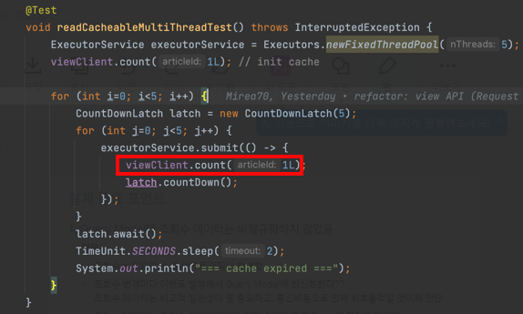
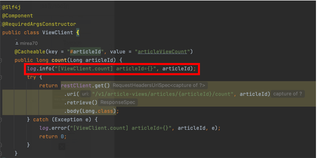
위 코드는 Read 영역에서 게시글 조회를 할 때 사용하는 ViewClient의 count() 함수를 테스트하고 있습니다. count() 함수는 API 결과값을 1초동안 캐싱하고 있고, API를 호출할 때마다 "[ViewClient.count]"로 시작하는 로그를 찍고 있습니다.
테스트 코드에서는 맨 처음 캐싱이 되도록 1번 호출하고 나서, 멀티쓰레드를 이용해 동시에 5번 호출 후, 캐시를 만료시키고 있습니다.
테스트를 실행하면 API 호출 후 캐싱되기 때문에, 로그가 단 한번만 찍혀야 할 것입니다.
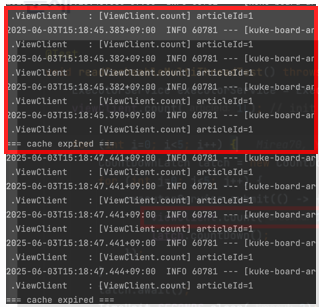
하지만 테스트를 실행하니, 이상하게도 로그가 5번 찍히고 있었습니다.
캐싱 처리를 해놓았음에도 불구하고 API 호출이 5번 모두 이뤄지고 있던 것입니다.
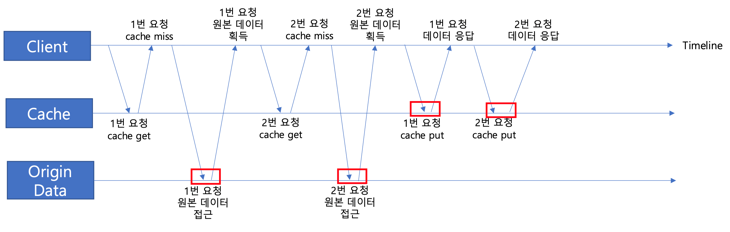
원인을 파악하기 위해 캐시 만료 타이밍에 동시요청을 2번했을 때로 축소하여 동작과정을 도식화해보았습니다.
그림을 보면 1번 요청으로 인해 원본 데이터를 가져와 반환 후, 아직 캐시에 적재되기 전에 2번 요청이 들어온 것을 확인할 수 있습니다. 즉, 캐시 만료가 되고나서 아직 캐시에 쌓이기도 전에 한꺼번에 요청이 몰려버려서 해당 요청들이 모두 캐싱을 활용하지 못하고 그대로 API 요청을 수행하고 있었습니다.
게시판의 조회 기능 특성 상, 충분히 특정 타이밍에 트래픽이 몰릴 수 있습니다. 따라서 이 문제는 반드시 해결되어야 할 문제일 것입니다.
최초 1번 요청이 왔을 때 Lock을 점유하고, 읽고나서 캐시에 적재 후 Lock을 반환하는 방식을 고려했습니다.
다른 동시 요청들은 캐시가 갱신될 때까지 대기해야 합니다
단 1초를 잘 사용하기 위해 Lock을 걸어서 다른 요청들을 대기시킨다?... 비효율적
Lock이 걸려있는 동안 캐시가 갱신될 때까지 기다리지말고 그대로 바로 응답해버리면 해결되지 않을까? 라는 생각이 들었습니다.
캐시 갱신을 위한 만료시간
실제 캐시 데이터 만료시간
만료되었더라도 실제 데이터를 여전히 갖고 있어야 하므로, 캐시 데이터의 만료시간을 Logical TTL과 실제 만료시간인 Physical TTL 두 가지로 분리했습니다. Logical TTL이 만료되면 Lock 획득을 시도하고, 성공한 요청만 원본 데이터를 가져와 캐시를 갱신합니다. Lock 획득에 실패한 동시요청들은 Physical TTL이 아직 지나지 않아 실제 캐시 데이터가 남아있기 때문에 기존 데이터를 그대로 반환합니다.
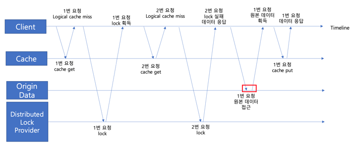
- 1번 요청은 캐시에서 데이터를 조회합니다.
- Logical TTL이 초과되어 요청은 캐시 데이터가 없다고 판단하지만 Physical TTL은 아직 지나지 않아 실제 캐시 데이터는 여전히 존재합니다.
- 1번 요청은 해당 데이터에 대해 락을 점유합니다. (이제 캐시 갱신하려고 시도할 것임)
- 이 때, 1번 요청이 아직 캐시 갱신 전 이지만, 그 전에 2번 요청이 캐시를 조회합니다.
- 2번 요청 또한, Logical TTL이 초과되어 요청은 캐시 데이터가 없다고 판단하지만 Physical TTL은 아직 지나지 않아 실제 캐시 데이터는 여전히 존재합니다.
- 2번 요청도 락 점유를 시도합니다.
- 1번이 이미 락을 점유하고 있으므로, 2번 요청은 락 획득에 실패합니다.
- Physical TTL은 아직 초과되지 않았으므로 기존 조회된 데이터를 그대로 응답합니다.
- 1번 요청은 원본 데이터에 접근합니다.
- 1번 요청은 원본 데이터를 정상적으로 획득 후, 캐시에 데이터를 적재합니다.
- 1번 요청은 데이터를 응답합니다.
조회수 데이터 요청이 이미 한번 캐싱되고나서 논리적 캐시는 만료되었지만, 물리적 캐시는 아직 지나지 않은 상황의 동작과정을 도식화 해보았습니다. 위 과정을 통해 크게 2가지를 기대할 수 있습니다.
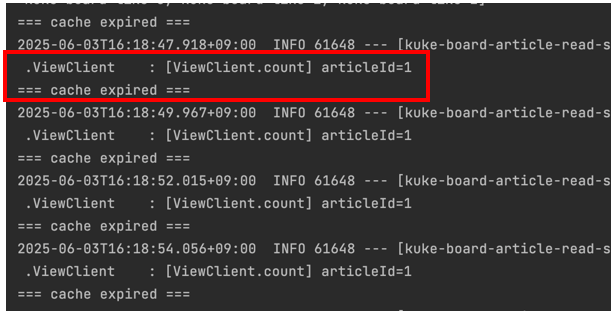
최적화 전과 달리, 캐시 만료 후에 API 호출을 단 1번만 하고 있는 것을 알 수 있습니다.
이제 만료되는 타이밍에 동시 트래픽이 한꺼번에 들어오더라도 조회수 데이터를 위한 API 호출은 단 한 번만 수행하게되어 효율적으로 처리할 수 있게 되었습니다.
캐싱을 해놓았다고 해서 성능 최적화가 끝난 것이 아니라는 점을 배웠습니다. 동시성 문제나 트래픽 증가에 따라 추가 문제가 발생할 수 있으므로, 이를 미리 예상하여 테스트코드로 해당 문제 상황을 재현할 수 있어야 한다는 것을 느꼈습니다.
또한 이번에 적용한 캐시 최적화 전략이 모든 경우에 적합하지는 않다는 점도 인식하게 되었습니다. Logical TTL과 Physical TTL이 다르기 때문에, 갱신이 처리되기 전까지 과거 데이터가 일시적으로 노출될 수 있습니다. 데이터 일관성이 중요한 경우에는 치명적인 영향을 끼칠 수 있으므로, 데이터 특성에 따라 전략을 달리 적용해야 한다는 점을 배웠습니다.